프롬프트 하나에 실려 가는 것들
AI에게 프롬프트를 보낼 때 실제로 넘어가는 건 그 한 문장이 아니에요. 도구가 여러 파일의 내용을 함께 붙여서 보내요. 화자는 이걸 화이트보드에 상자 여러 개로 그려 놓고 하나씩 짚어요.
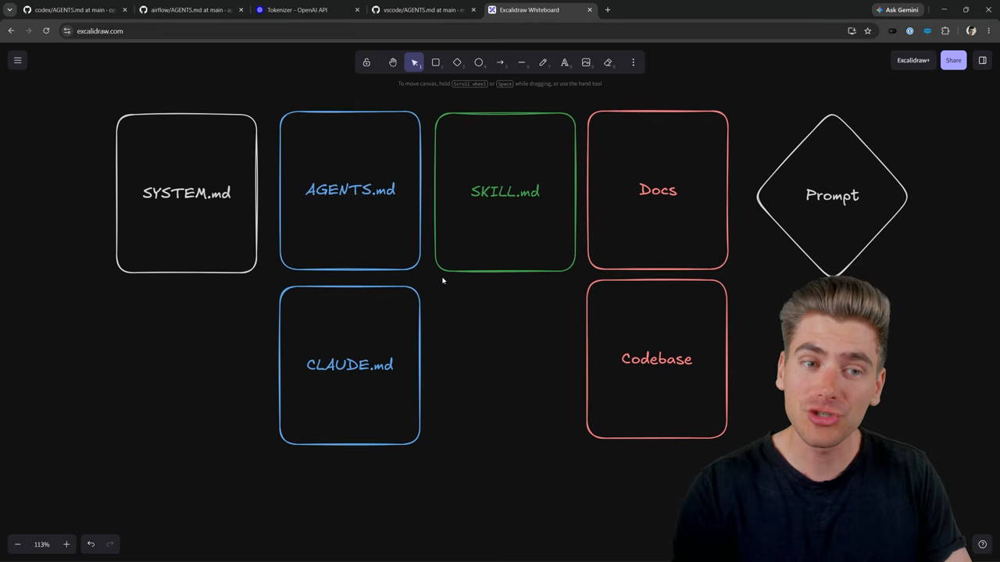
| 재료 | 언제 실리나요 | 직접 다듬을 수 있나요 |
|---|---|---|
| 시스템 프롬프트 | 매 요청 | 대부분 못 해요. Claude Code나 Pi 같은 도구가 직접 써요 |
AGENTS.md / CLAUDE.md | 매 요청, 통째로 | 가장 중요하게 다듬을 대상이에요 |
| 스킬 | 필요하다고 판단될 때 | 설치하거나 직접 써요 |
| 문서·코드 | 문제를 풀 때 필요한 만큼 | 문서는 다듬을 수 있어요. 코드는 이 영상에서 다루지 않아요 |
AGENTS.md는 저장소 루트에 두는 설정 파일이에요. Claude Code는 같은 역할을 하는 파일을 CLAUDE.md라고 부르고, Gemini 쪽은 GEMINI.md를 써요. 화자는 이름만 다를 뿐 모두 같은 파일이라고 정리해요.
이 셋 중 가장 중요한 건 AGENTS.md예요. 매 요청에 전체가 실리니까, 이 파일이 나쁘면 프롬프트를 아무리 잘 써도 모든 요청이 오염돼요.
나쁜 AGENTS.md는 왜 나쁠까요?
화자는 유명 오픈소스 저장소 세 곳의 파일을 나쁜 예로 보여 줘요. 셋 다 문제는 하나예요. 너무 커요.
Codex — 문제가 생길 때마다 늘어난 목록
OpenAI Codex 저장소의 파일은 끝없는 글머리표 목록이에요. 화자는 처음엔 작았던 파일에 문제가 생길 때마다 한 줄씩 덧붙인 결과라고 추측해요. 코드 리뷰 규칙, API 호환성, TUI 스타일, 테스트 규칙이 한데 섞여 있고, 스타일 규칙은 두 군데에 중복돼 있어요.
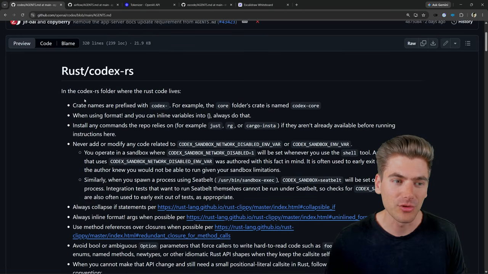
그래도 잘한 점이 하나 있어요. TUI 스타일 규칙은 본문에 쓰지 않고 별도 파일 경로만 적어 뒀어요. 스타일 작업을 할 때만 그 파일을 열면 되니까 평소 컨텍스트는 작게 유지돼요. 화자가 권하는 방식이 바로 이거예요.
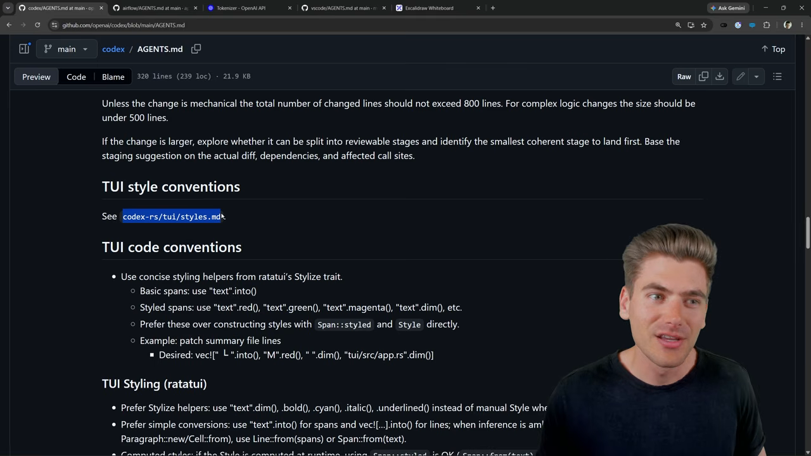
Airflow — 537줄, 약 8,600토큰
Apache Airflow의 파일은 537줄이에요. 화자가 토크나이저에 넣어 보니 8,602토큰이 나왔어요. 요즘 모델의 컨텍스트 윈도우는 100만 토큰 수준이지만, 화자 경험으로는 10만~20만 토큰을 넘기면 답의 질이 크게 떨어져요. 10만 토큰을 기준으로 잡으면 이 파일 하나가 10% 가까이를 차지하는 셈이에요.
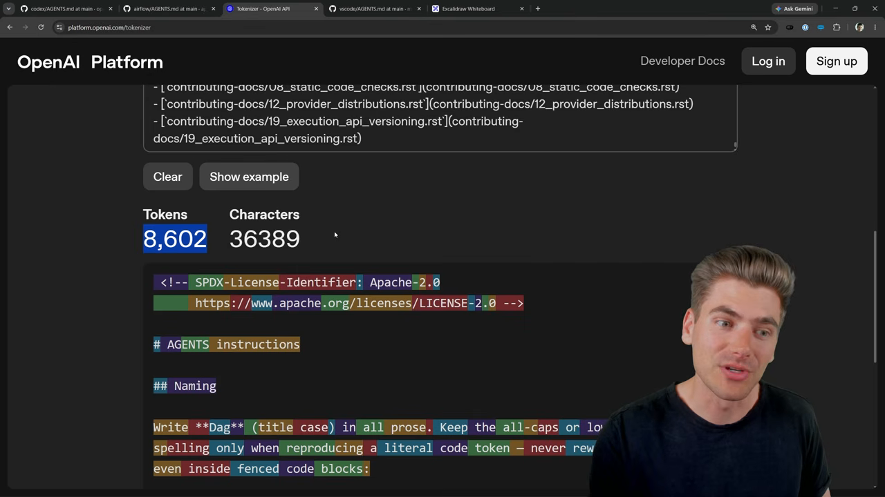
VS Code — 짧지만 문제를 옮겨 놓기만 했어요
VS Code 저장소의 파일은 언뜻 짧아 보여요. 하지만 하는 일은 다른 거대한 파일 하나를 가리키는 것뿐이에요. 그 파일엔 외부 링크 없이 정보가 빽빽해서, 결국 같은 문제가 자리만 옮겼어요.
좋은 AGENTS.md를 쓰는 법
화자는 웹과 API가 함께 있는 풀스택 데모 프로젝트로 직접 고쳐 보여 줘요. 처음 파일엔 테스트, 웹, API, CSS, React, TypeScript 규칙이 다 들어 있었어요. 하지만 모든 요청이 CSS나 테스트를 다루진 않아요.
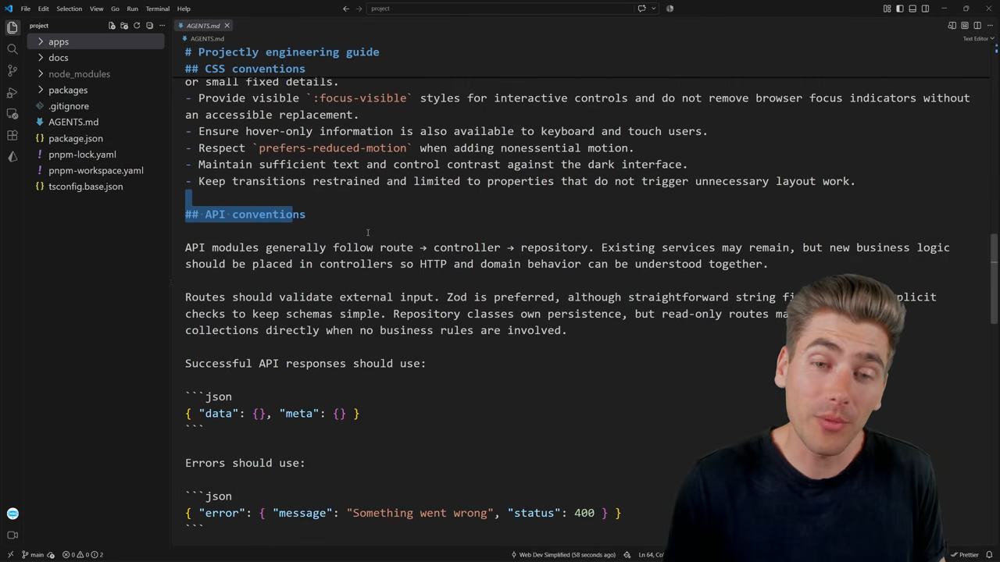
주제별 규칙은 docs/로 빼요
방법은 단순해요. 특정 작업용 섹션이 보이면 docs/css-conventions.md 같은 파일을 만들어 내용을 옮겨요. 원래 자리엔 '자세한 스타일 규칙은 이 파일을 참고하라'는 한 줄만 남겨요. API, React, TypeScript, 저장소 구조도 똑같이 해요. 문서끼리 서로 링크해도 괜찮아요. 데모에서는 TypeScript 규칙 문서가 테스트 문서를 가리켜요.
이렇게 나누면 에이전트는 필요한 문서만 열어요. 프로젝트에 React, Angular, Svelte 코드가 모두 있어도, React 작업 중엔 React 문서만 읽고 나머지는 컨텍스트에 들어오지 않아요.
시작 가이드는 빼요
대부분의 파일엔 설치와 실행 방법을 적은 '시작하기' 섹션이 있어요. 화자는 이게 필요 없다고 봐요. 에이전트는 새로 합류한 개발자가 아니에요. 이미 세팅된 프로젝트에서 코드를 쓰는 사람에게 필요한 정보만 주면 돼요.
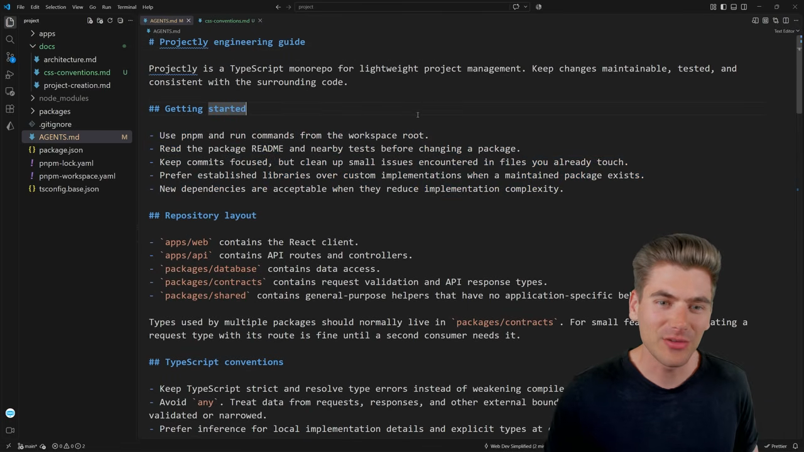
| 남길 것 | 뺄 것 |
|---|---|
| 프로젝트가 무엇인지 한두 문장 | 설치·실행 같은 시작 가이드 |
| pnpm처럼 표준이 아닌 도구 | CSS·API·React·TypeScript 세부 규칙 (문서로 이동) |
| 모든 작업에 해당하는 특이한 스크립트 | PR·커밋·배포 절차 (문서로 이동하고 '언제 볼지'만 적기) |
| 높은 수준의 폴더 구조 | 파일 단위까지 내려간 상세 구조 |
PR을 올리기 전에 린트, Prettier, 테스트를 돌리라는 식의 절차도 문서로 빼요. 본문엔 'PR을 올릴 때는 이 문서를 참고하라'만 남겨요. PR을 올리지 않는 요청에선 읽을 필요가 없으니까요.
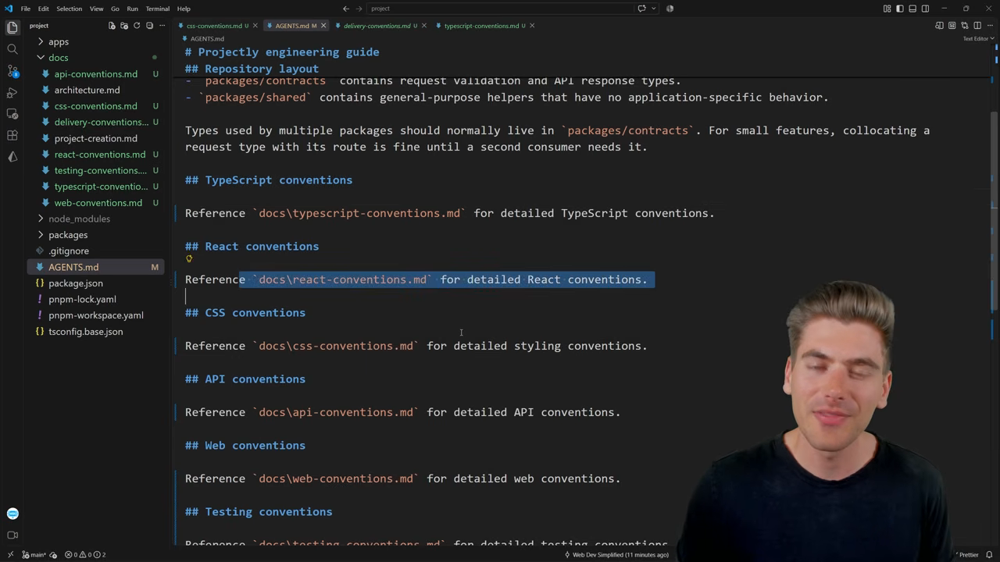
폴더 구조는 높은 수준까지만
폴더 구조를 적는 건 괜찮아요. 다만 파일 하나하나까지 적으면 위험해요. 파일 이름과 위치는 자주 바뀌고, 낡은 정보는 에이전트를 헷갈리게 해서 결과가 나빠져요.
자동 생성하지 말고, 틀릴 때만 더해요
화자가 특히 강조하는 부분이에요. 에이전트에게 저장소를 읽고 파일을 만들라고 시키면 장황한 결과가 나와요. 처음엔 설명 몇 문장, 패키지 매니저, 폴더 구조 정도로 시작해요. 그다음 에이전트가 이상한 TypeScript 코드를 쓰면, 그때 TypeScript 규칙 문서를 만들어 그 실수를 적어요.
I would recommend mostly only changing your agents MD when you notice the agent doing something wrong as opposed to trying to preemptively fix them.
미리 막으려 하지 말고, 에이전트가 실제로 틀린 걸 봤을 때만 고치라는 말이에요.
— 영상 13:34
CLAUDE.md는 심볼릭 링크로 맞춰요
Claude Code 사용자를 위해 CLAUDE.md를 만들 때, 많은 사람이 그 안에 'AGENTS.md를 참고하라'는 한 줄만 적어요. 화자는 이게 썩 좋지 않다고 봐요. 에이전트가 규칙을 덧붙일 때 CLAUDE.md나 AGENTS.md 중 한쪽에만 적는 일이 잦아서, 두 파일 내용이 금방 어긋나요.
그래서 두 파일을 심볼릭 링크로 묶어 아예 같은 파일로 만들라고 권해요.
| 운영체제 | 영상에서 쓴 명령 | 주의할 점 |
|---|---|---|
| Mac·Linux | ln -s AGENTS.md CLAUDE.md | 원본이 먼저, 링크 이름이 뒤예요 |
| Windows | mklink /d CLAUDE.md AGENTS.md | 순서가 반대예요. 관리자 권한 명령 프롬프트에서 실행해야 했어요 |
Windows에서는 처음에 -d로 써서 문법 오류가 났고, /d로 고친 뒤엔 권한이 없다는 오류가 났어요. 관리자 권한으로 다시 실행하자 링크가 만들어졌어요.
모노레포에선 AGENTS.md를 나눠요
규모가 큰 프로젝트는 여러 패키지를 한 저장소에 담는 모노레포인 경우가 많아요. 데모도 apps/web(프런트엔드)과 apps/api(백엔드)로 나뉘어 있어요. 웹은 TypeScript만, 백엔드는 Python만 쓴다면 두 영역의 규칙을 루트 파일 하나에 몰 이유가 없어요.
방법은 하위 폴더에 AGENTS.md를 하나 더 만드는 거예요. 데모에서는 웹 규칙 문서를 지우고 그 내용을 apps/web/AGENTS.md로 옮겨요. API 규칙도 apps/api/AGENTS.md로 옮겨요. 그러면 루트 파일엔 프로젝트 전체에 해당하는 내용만 남아요.
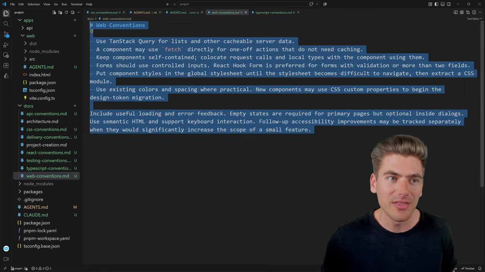
apps/web 안의 파일로 옮긴 모습이에요. 웹 쪽에서 일할 때만 필요한 내용이에요. 영상 17:05에서 보기어느 파일이 읽히나요
화자 설명으로는 에이전트를 어느 폴더에서 실행했는지가 기준이에요. 루트에서 실행하면 루트 파일만 읽어요. apps/api로 이동해서 실행하면 루트 파일과 API 파일을 둘 다 읽어요. 화자는 이게 변경하는 파일의 위치가 아니라 실행 위치 기준이라고 강조해요.
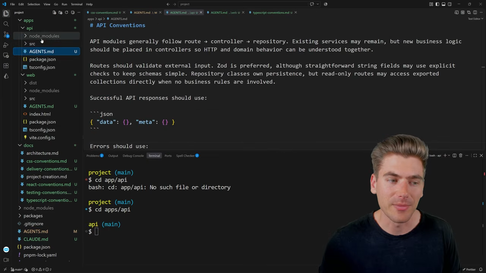
스킬은 어디에 쓰나요?
인증, DB, TypeScript, React까지 모두 AGENTS.md와 문서에 넣으면 금방 비대해져요. 정보가 많을수록 AI가 지금 필요한 걸 고르기도 어려워요. 화자는 여기서 스킬을 다음 단계로 소개해요. 스킬은 특정 작업을 할 때만 AI에 주입하는 문서예요.
설치하고 찾는 법
보통 npx skills add 뒤에 스킬 저장소 주소를 붙여 설치해요. 쓸 만한 스킬은 skills.sh 사이트에서 검색할 수 있어요.
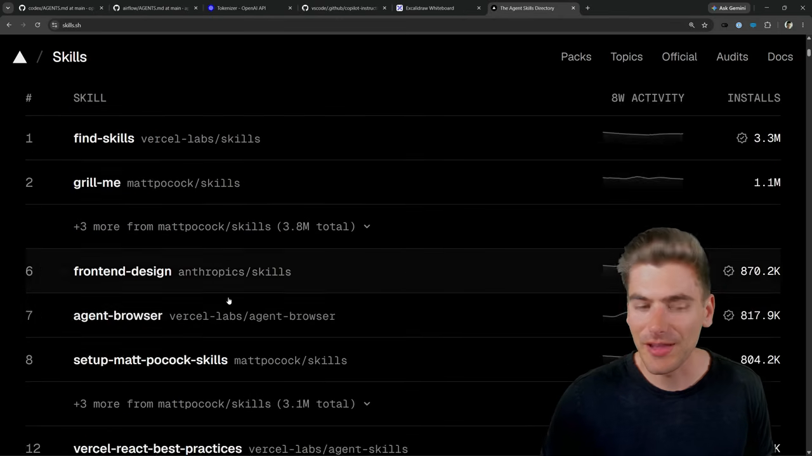
설치 중엔 어떤 에이전트에 쓸지, 어디에 설치할지를 물어요. 화자는 '프로젝트에 설치'를 고르는 게 가장 중요하다고 해요. 그래야 스킬 코드가 프로젝트 안에 들어와요. 데모에선 apps/api 폴더에서 실행해서 스킬이 그 폴더에 설치됐어요.
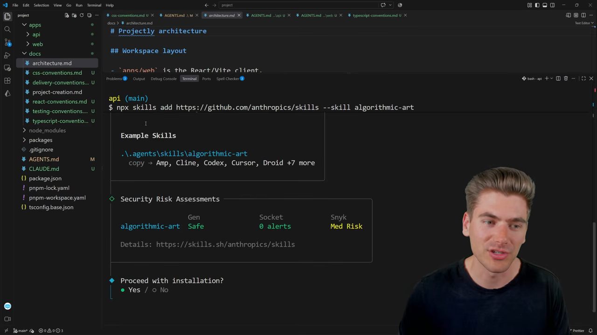
무엇이 매번 실리나요
스킬 폴더마다 SKILL.md가 있고, 맨 위에 이름과 설명이 적혀 있어요. 이 이름과 설명은 매 요청에 실려요. AI가 이걸 보고 지금 어떤 스킬이 필요한지 고르기 때문이에요. 그래서 스킬을 100개 깔면 그만큼 컨텍스트를 차지해요. 스킬을 골랐을 때만 본문 전체를 읽어요.
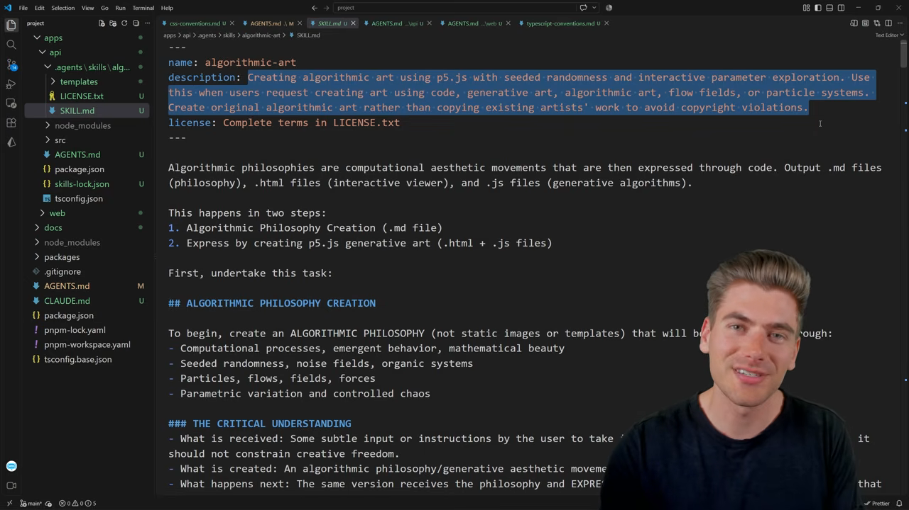
AGENTS.md와 스킬을 어떻게 나눌까요
| 어디에 | 무엇을 | 영상 속 예 |
|---|---|---|
AGENTS.md (또는 거기서 링크한 문서) | 거의 모든 작업에 해당하는 일반 규칙 | TypeScript 작성 규칙, 전체 폴더 구조 |
| 스킬 | 어쩌다 하는 특정 작업을 늘 같은 방식으로 하게 하는 설명 | 이 프로젝트의 인증 처리 방법 |
인증처럼 자주 손대지 않는 영역을 스킬로 만들면, 인증 작업을 할 때만 그 스킬이 들어오고 AGENTS.md에는 인증 얘기가 한 줄도 없어도 돼요. 이렇게 짧은 AGENTS.md에서 문서와 스킬로 뻗어 나가게 만들면, 적은 정보로 시작해서 필요한 만큼 찾아 읽게 할 수 있어요.
스킬은 직접 불러 쓸 수도 있어요. Pi 같은 편집기에서 /skill을 입력하면 스킬 목록이 뜨고, 하나를 골라 프롬프트와 함께 보내요. 화자는 마지막으로, 남이 만든 스킬을 받는 것보다 자기 프로젝트에 맞는 스킬을 직접 쓰는 데 진짜 힘이 있다고 말해요.